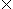

![[Front]](images/OpenGL3.gif)
![[Reference]](../buttons/ReferenceOff.gif)
![[Imp. Guide]](../buttons/ImpGuideOff.gif)
![[Index]](../buttons/IndexOff.gif)
![[Prev]](buttons/ArrowLeftOff.gif)
![[Next]](buttons/ArrowRightOff.gif)
![[Up]](buttons/ArrowUpOff.gif) C Specification
C Specification
GLint gluBuild2DMipmaps(
GLenum target,
GLint component,
GLsizei width,
GLsizei height,
GLenum format,
GLenum type,
const void *data)
Parameters
DescriptionA return value of 0 indicates success. Otherwise a GLU error code is returned (see gluErrorString).
gluBuild2DMipmaps first check whether width and height of data are both powers of 2. If not, gluBuild2DMipmaps scales a copy of data up or down to the nearest power of 2. This copy is then used as the base for subsequent mipmapping operations. For example, if width is 57 and height is 23, then a copy of data scales up to 64 and down to 16, respectively, before mipmapping takes place. (If width or height is exactly between powers of 2, the copy of data is scaled upward.)
If the GL version is 1.1 or greater, gluBuild2DMipmaps then uses proxy textures (see glTexImage1D) to determine whether there's enough room for the requested texture in the implementation. If not, width is halved (and halved again) until it fits.
gluBuild2DMipmaps then uses proxy textures (see glTexImage2D) to determine if the implementation can store the requested texture in texture memory. If not, both dimensions are continually halved until it fits.
Next, gluBuild2DMipmaps builds a series of images; it halves a copy of type (or a scaled version of type, if necessary) along both dimensions until size 11 is reached. At each level, each texel in the halved mipmap is an average of the corresponding four texels in the larger mipmap. (In the case of rectangular images, halving the images repeatedly eventually results in an n1 or 1n configuration. Here, two texels are averaged instead.)
glTexImage2D is called to load each
of these images by level. If width and height
are both powers of 2 which fit in the implementation, level 0 is a copy of
data, and the highest level is
See the glTexImage1D reference page for a description of the acceptable values for format. See the glDrawPixels reference page for a description of the acceptable values for type.
Notes
Errors
See Also